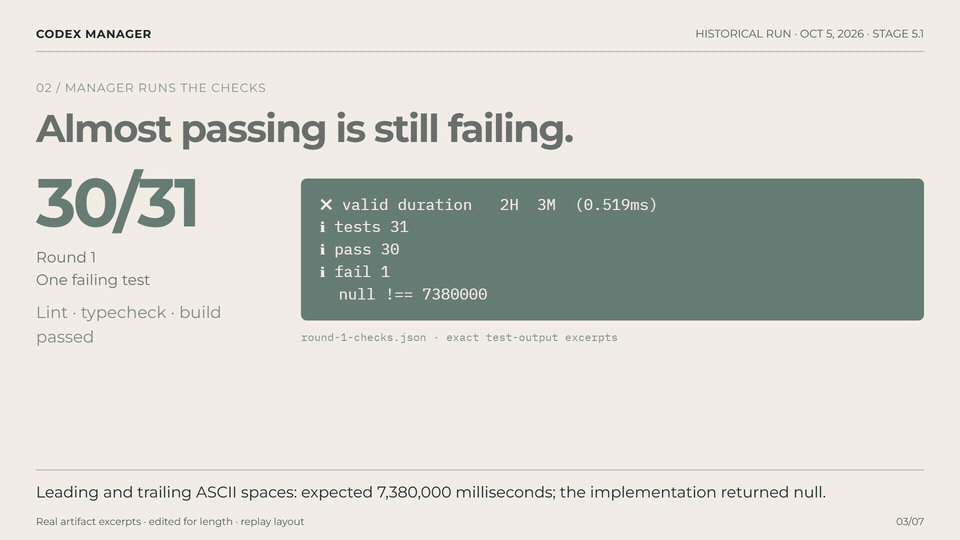

One bounded task. A patch you can inspect.
Give ChatGPT the task.
Let it manage Codex until tests pass.
A local Manager hands your small repo task to Codex, checks the result separately and requests bounded repairs. You receive a patch and evidence. Up to three attempts; success is not guaranteed.
Request the installation kitSend Windows/host setup, Codex sign-in status and a small task description. No source, tokens or payment details. Runtime distributed privately after checking fit.
New: 80-second historical artifact replay
One failed test. Manager sent Codex back.

Real recorded logs, October 5, 2026. Silent with English captions; edited for length. Separate Beta 16/16 run. One internal example, not a customer benchmark.Recorded internal evidence · October 5, 2026 · Stage 5.1
A failed first attempt became a checked patch.
A duration-parser task failed on ASCII spaces. Codex repaired it, checks ran again, and the original repo stayed unchanged. The beta’s separate installer demo passed 16/16 in one round.
One internal run, not a reliability or productivity benchmark. Separate review can use the same model. No external customer results yet.Start with a known, low-risk task.
Download and extract the kit. Then open START and approve the first-run window: two actions after extraction. Dependency preparation, installation, registration, known-demo authorization and checked-result display are automatic. Measured internally: 1:43 with dependencies present and 2:59 including portable Node/Git preparation, both 16/16 and review accept. Timed from extraction to the local result. ZIP download, human actions/login and full Desktop interaction are excluded; five minutes is not a universal promise.
The launcher runs the MCP demo. The prepared Desktop link fills the Beta plugin and that same job; send the draft to view its result in ChatGPT, switching to Work if needed. This extra Desktop path has not been timed. Initial setup failure triggers automatic status and repair, with a readable diagnosis. Your own repo still needs explicit authorization.
Requirements and installation · Measured onboarding results · Visual first steps
Local files. Cloud model context.
Your repo, work copies, patches and evidence are stored on your PC. Authorized source context, prompts and check output still go to your signed-in model service; ChatGPT processes your conversation. Local-first does not mean offline or zero cloud exposure.
Local feedback exports JSON and Markdown without a cloud service. Trusted local checks run with your Windows permissions; a work copy is not an OS sandbox. No automatic merge, push, deployment or payments.
Read privacy and safety boundariesDecide whether the narrow workflow fits.
Why not Cursor, Devin or Factory?
They already offer agents, checks, review and automation. There is no head-to-head benchmark or superiority claim here. This beta focuses on ChatGPT managing Codex for one authorized local Windows work copy and returning a patch. Existing hooks/CI may already solve your problem.
What setup do I need?
Windows x64, PowerShell 5.1, Node ≥22.18 and Git (prepared automatically if missing), a local Work Desktop host with stdio MCP/plugins, and signed-in Codex with available quota. Windows 11 was tested. Web/mobile and remote-only hosts are unsupported. No new API key is requested by the tested login path.
What if the task fails?
Bounded repairs can run up to the registered limit. Failed or escalated stays that status with available evidence. Keep the job ID; inspect/resume it instead of submitting duplicates. You still review the patch.
What does it cost?
The private beta is free. $19/$29/$49 are research questions for a possible future monthly Manager fee, separate from model access. There is no checkout, paid plan or measured willingness to pay yet.
How do I uninstall?
UNINSTALL removes this beta's idle background worker/startup and owned host registration while retaining repos, results, backups, keys and releases. Active tasks must finish or be cancelled first. REPAIR can restore its registration; cross-version rollback is unverified.
Current limits
One active task, at most three attempts, unsigned Windows scripts and limited check syntax. New machines/accounts, Windows 10, macOS/Linux, cold reboot, complex monorepos and arbitrary providers are unverified. No automatic source application, guarantee, customer time-savings claim or payment flow.
Apply for a free repo trial